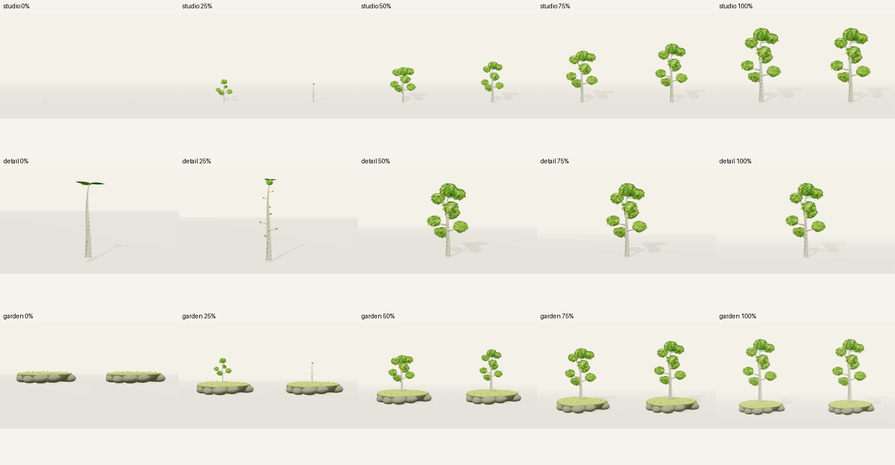

Заменено: переключатель источников отклонён. Актуальная параметрическая берёза и материалы проверки.
Рабочая проба · ожидает твоей оценки. Старый и Blender-генератор сохранены.
Открыть новый рост v6 и покрутить дерево → · Открыть Blender-берёзу →
0%, 25%, 50%, 75%, 100%. Сверху — сравнение в студии, посередине — крупный вид нового роста, снизу — сравнение на острове. В парах слева исходный профиль, справа новый.

Взрослый силуэт сохраняется. Раннее дерево пока слишком слабо читается на острове; молодые пропорции и маленькие круглые кроны требуют оценки. Новый рост не объявлен принятым.
Ветер v6 — следующая отдельная проба после твоей оценки роста. Ветер Blender уже доступен. Проверка на физическом телефоне ещё предстоит.
Оценка: принять / доработать / отклонить.